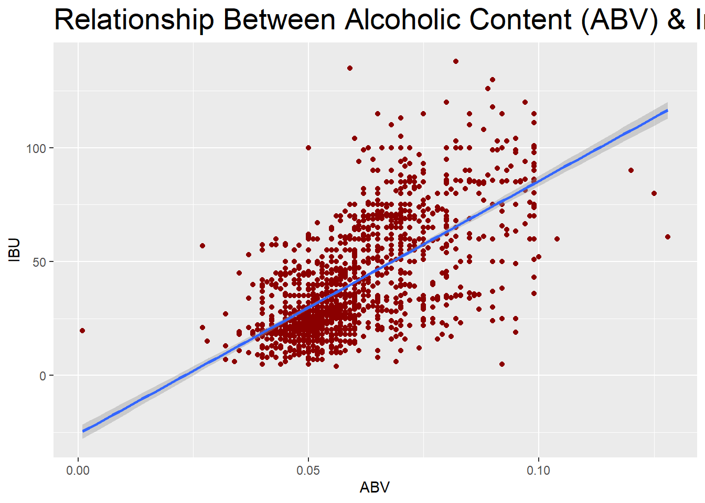

The first step of the analysis is to import and merge the breweries data with beers data and state lat/long data.
It is then possible to view the top and bottom 6 values in the new, merged data.
## # A tibble: 6 x 10
## Name Beer_ID ABV IBU Brewery_id Style Ounces Brewery_Name City State
## <chr> <dbl> <dbl> <dbl> <dbl> <chr> <dbl> <chr> <chr> <chr>
## 1 Pub Be~ 1436 0.05 NA 409 Ameri~ 12 10 Barrel Br~ Bend OR
## 2 Devil'~ 2265 0.066 NA 178 Ameri~ 12 18th Street ~ Gary IN
## 3 Rise o~ 2264 0.071 NA 178 Ameri~ 12 18th Street ~ Gary IN
## 4 Sinist~ 2263 0.09 NA 178 Ameri~ 12 18th Street ~ Gary IN
## 5 Sex an~ 2262 0.075 NA 178 Ameri~ 12 18th Street ~ Gary IN
## 6 Black ~ 2261 0.077 NA 178 Oatme~ 12 18th Street ~ Gary IN## # A tibble: 6 x 10
## Name Beer_ID ABV IBU Brewery_id Style Ounces Brewery_Name City State
## <chr> <dbl> <dbl> <dbl> <dbl> <chr> <dbl> <chr> <chr> <chr>
## 1 Rocky ~ 1035 0.075 NA 425 Americ~ 12 Wynkoop Bre~ Denv~ CO
## 2 Belgor~ 928 0.067 45 425 Belgia~ 12 Wynkoop Bre~ Denv~ CO
## 3 Rail Y~ 807 0.052 NA 425 Americ~ 12 Wynkoop Bre~ Denv~ CO
## 4 B3K Bl~ 620 0.055 NA 425 Schwar~ 12 Wynkoop Bre~ Denv~ CO
## 5 Silver~ 145 0.055 40 425 Americ~ 12 Wynkoop Bre~ Denv~ CO
## 6 Rail Y~ 84 0.052 NA 425 Americ~ 12 Wynkoop Bre~ Denv~ COA map of breweries by state is then constructed, with SIZE representing number of Breweries
A histogram is also built to show breweries by state, with a clearer depiction of absolute number of breweries by state

An important part of data analysis is checking for columns with missing values (NAs). Below shows that only ABV, IBU and Style data # has missing values.
The Style column only has 5 missing values, so they are replaced with “Unknown”
## [1] ""
## [1] ""
## [1] "has NA"
## [1] "has NA"
## [1] ""
## [1] "has NA"
## [1] ""
## [1] ""
## [1] ""
## [1] ""## sapply.df..function.x...
## Name
## Beer_ID
## ABV has NA
## IBU has NA
## Brewery_id
## Style has NA
## Ounces
## Brewery_Name
## City
## StateChecking basic regressions to see if imputation of ABV / IBU is possible using the other.
##
## Call:
## lm(formula = IBU ~ ABV, data = df)
##
## Residuals:
## Min 1Q Median 3Q Max
## -78.849 -11.977 -0.721 13.997 93.458
##
## Coefficients:
## Estimate Std. Error t value Pr(>|t|)
## (Intercept) -34.099 2.326 -14.66 <2e-16 ***
## ABV 1282.037 37.860 33.86 <2e-16 ***
## ---
## Signif. codes: 0 '***' 0.001 '**' 0.01 '*' 0.05 '.' 0.1 ' ' 1
##
## Residual standard error: 19.26 on 1403 degrees of freedom
## (1005 observations deleted due to missingness)
## Multiple R-squared: 0.4497, Adjusted R-squared: 0.4493
## F-statistic: 1147 on 1 and 1403 DF, p-value: < 2.2e-16##
## Call:
## lm(formula = ABV ~ IBU, data = df)
##
## Residuals:
## Min 1Q Median 3Q Max
## -0.033288 -0.005946 -0.001595 0.004022 0.052006
##
## Coefficients:
## Estimate Std. Error t value Pr(>|t|)
## (Intercept) 4.493e-02 5.177e-04 86.79 <2e-16 ***
## IBU 3.508e-04 1.036e-05 33.86 <2e-16 ***
## ---
## Signif. codes: 0 '***' 0.001 '**' 0.01 '*' 0.05 '.' 0.1 ' ' 1
##
## Residual standard error: 0.01007 on 1403 degrees of freedom
## (1005 observations deleted due to missingness)
## Multiple R-squared: 0.4497, Adjusted R-squared: 0.4493
## F-statistic: 1147 on 1 and 1403 DF, p-value: < 2.2e-16The below graphs show the median IBU and ABV by state. IBU has some differences among states, but since median ABV is pretty similar #among states,the graph forms a long plateau.


Medians are a great way to observe ABV & IBU by state, but finding the maximum ABV & IBU beers can also be valuable.
## [1] "State with the maximum alcoholic beer: CO, with an alcohol percentage of 12.8%"## [1] "State with the maximum bitterness: OR, with an IBU of 138"Observing the distribution of ABV, it can be seen that most ABV fall into the 5-6% range.
Furthermore, there seems to be a pretty strong relationship between ABV and IBU. This is most likely because
higher concentrations of ingredients (such as hops) are needed to produce higher alcohol beers, resulting in higher alcohol and higher bitterness.
This strong relationship allows for the construction of a prediction engine to predict IBU given ABV, which will be shown at the end of the document.


This word cloud shows the most common words in beer names. It is an interesting graphic showing how popular IPA is in the name of a # beer.

Since IPAs generally have high hop contents and relatively high alcoholic content, it is possible to predict whether a beer is an IPA given ABV and IBU.
Leveraging a machine learning algorithm called “K Nearest Neighbors,” the results are promising - nearly a 99% prediction accuracy.
The KNN (K Nearest Neighbors) algorithm looks at the ‘k’ closest points to a new point
###‘K’ is specified by the analyst and different values of ‘k’ can have different results ### New data points are evaluated by the class of the points closest to them ### The graph ostensibly shows how many similar points each new beer must be compared to to generate a prediction (k), and the accuracy of each k. ### The fact that KNN predicts both IPA and Ales very strongly shows that there is a different in IBU/ABV values for Ales and IPAs 
## [1] "Confusion Matrix of Ale Classification"## Confusion Matrix and Statistics
##
##
## knn_model_Ales 0 1
## 0 205 1
## 1 2 73
##
## Accuracy : 0.9893
## 95% CI : (0.9691, 0.9978)
## No Information Rate : 0.7367
## P-Value [Acc > NIR] : <2e-16
##
## Kappa : 0.9726
##
## Mcnemar's Test P-Value : 1
##
## Sensitivity : 0.9903
## Specificity : 0.9865
## Pos Pred Value : 0.9951
## Neg Pred Value : 0.9733
## Prevalence : 0.7367
## Detection Rate : 0.7295
## Detection Prevalence : 0.7331
## Balanced Accuracy : 0.9884
##
## 'Positive' Class : 0
## Since Ales generally have high hop contents and relatively high alcoholic content, it is possible to predict whether a beer is an Ale given ABV and IBU.
Leveraging a machine learning algorithm called “K Nearest Neighbors,” the results are promising - nearly a 99% prediction accuracy.
The KNN (K Nearest Neighbors) algorithm looks at the ‘k’ closest points to a new point
‘K’ is specified by the analyst and different values of ‘k’ can have different results
New data points are evaluated by the class of the points closest to them
The graph ostensibly shows how many similar points each new beer must be compared to to generate a prediction (k), and the accuracy of each k.
The fact that KNN predicts both IPA and Ales very strongly shows that there is a different in IBU/ABV values for Ales and IPAs

## [1] "Confusion Matrix of Ale Classification"## Confusion Matrix and Statistics
##
##
## knn_model_Ales 0 1
## 0 170 3
## 1 0 108
##
## Accuracy : 0.9893
## 95% CI : (0.9691, 0.9978)
## No Information Rate : 0.605
## P-Value [Acc > NIR] : <2e-16
##
## Kappa : 0.9776
##
## Mcnemar's Test P-Value : 0.2482
##
## Sensitivity : 1.0000
## Specificity : 0.9730
## Pos Pred Value : 0.9827
## Neg Pred Value : 1.0000
## Prevalence : 0.6050
## Detection Rate : 0.6050
## Detection Prevalence : 0.6157
## Balanced Accuracy : 0.9865
##
## 'Positive' Class : 0
## Almost 42% of all beers are missing an IBU value
Using machine learning techniques, it is possible to build an automated prediction engine, based on beer type, ABV and location.
The process leverages multiple machine learning algorithms and compares the results at the end. The model with the best explanatory power
is then chosen to predict the missing IBU values.
After each model, a predicted vs. actual scatter plot is provided to show how well the model predicts values.


## user system elapsed
## 27.73 1.16 28.97
## Bootstrap sampling is being applied, p=0.1 argument is ignored
## running: regression cross-validation with 10 iterations
## running iteration: 1
## running iteration: 2
## running iteration: 3
## running iteration: 4
## running iteration: 5
## running iteration: 6
## running iteration: 7
## running iteration: 8
## running iteration: 9
## running iteration: 10## Fit MSE = 177.0874
## Fit percent variance explained = 74.3
## Median permuted MSE = 5.436625
## Median permuted percent variance explained = 99.205
## Median cross-validation RMSE = 3.397972
## Median cross-validation MBE = 0.3284223
## Median cross-validation MAE = 2.045819
## Range of ks p-values = 0.01370737 0.4701478
## Range of ks D statistic = 0.04218362 0.07785888
## RMSE cross-validation error variance = 0.1684925
## MBE cross-validation error variance = 0.2296594
## MAE cross-validation error variance = 0.03790809## [14:31:57] INFO: amalgamation/../src/tree/updater_prune.cc:101: tree pruning end, 46 extra nodes, 0 pruned nodes, max_depth=8
## [1] train-rmse:12.566269
## [14:31:57] INFO: amalgamation/../src/tree/updater_prune.cc:101: tree pruning end, 528 extra nodes, 0 pruned nodes, max_depth=20
## [2] train-rmse:10.206293
Final accuracies. RMSE Is how much the average prediction is “off” by.
The Random Forest is chosen as the optimal model.
The random forest is an ensemble model that, at least in some ways, mimics the classic adage of “Wisdom of Crowds.”
A random forest is a collection of decision trees, each one being trained on a different “Bootstrap Sample” of data, or a random sample with replacement.
Additionally, at each bootstrap sample, a subset of features can be selected.
So at each decision tree, a random sample of rows AND columns is selected and a model is built.
Each tree’s output is then averaged to make a final prediction.
## xg_rmse rf_rmse lm_rmse noskill_rmse
## 1 10.03874 9.586835 9.628729 21.34206Using the optimal model (Random Forest) to predict all NA’s in the original IBU data
